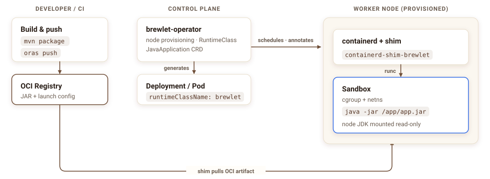
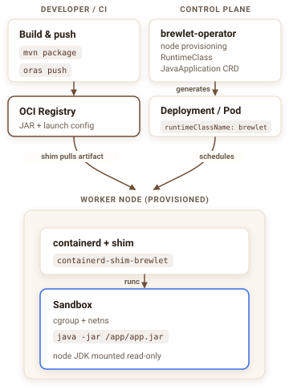

Java on Kubernetes,
for real this time.
Ship just your app (a fat JAR, a layered classpath, or a JPMS module) straight to your registry as an OCI artifact. A node-resident JVM runs it directly. No Dockerfile. No base image. No JVM baked into every image.
Brewlet is to Java what KWasm / SpinKube are to WebAssembly.
you build, patch & push all of it
the JDK installation lives on the node,
shared & patched centrally
What you ship: before vs. after
FROM eclipse-temurin:21-jre # you own this base + its CVEs
COPY target/app.jar /app/app.jar
ENTRYPOINT ["java","-jar","/app/app.jar"]
$ docker build -t registry/app:1.4.2 .
$ docker push registry/app:1.4.2 # ~250 MB# Push ONLY the JAR as an OCI artifact
$ brewlet push target/app.jar registry/app:1.4.2
# …or straight from your Maven build, no CLI:
$ mvn package brewlet:push -Dbrewlet.image=registry/app:1.4.2
# Deploy it — one Brewlet-specific line:
runtimeClassName: brewlet
image: registry/app:1.4.2
resources:
limits: { cpu: "2", memory: "512Mi" }You ship the 5 MB you wrote. Brewlet supplies the rest from the node.
The one new thing: a tiny launch config
A small JSON descriptor rides inside the artifact and tells the node how to
run the JAR. brewlet push writes a minimal one for you, or you
can author it and pass --config.
{
"schemaVersion": 1,
"mainJar": "app.jar", // the JAR inside the artifact
"entry": { "mode": "jar" }, // java -jar (or "classpath")
"enablePreview": false, // app-intrinsic launch knobs only
"addOpens": ["java.base/java.lang=ALL-UNNAMED"],
"systemProperties": { "file.encoding": "UTF-8" }
}
The artifact carries only app-intrinsic launch knobs (preview, module access,
system properties). JDK, launcher, ports, and resource tuning like -XX flags
live in the deployment descriptor. A
NoCompatibleJDK admission error means no node offers the JDK you asked for.
You stop owning the packaging you never wanted
No Dockerfiles
There is no image build. You push the JAR itself as an OCI artifact.
No OS base CVEs
There is no OS layer in the artifact, so there is nothing to patch.
One JDK install, shared
The JDK installation lives on the node, patched centrally. One upgrade patches every workload.
Tiny pushes
Only the JAR moves over the wire, not hundreds of megabytes of image.
Faster cold starts
AppCDS ships as an artifact layer: the JVM memory-maps a class-data archive on launch, cutting startup with zero code changes.
Mixed-arch pools
Per-node-arch JDKs are provisioned automatically; non-portable JNI JARs pin to amd64/arm64 nodes via an optional arch constraint.
How it works
Brewlet reuses the same extension points the Wasm ecosystem uses: a node
provisioner installs a runtime, a containerd shim executes the payload,
and a RuntimeClass routes pods to it.
Build
mvn package / gradle bootJar, nothing Brewlet-specific. You get your fat JAR.
Push
brewlet push (or the Maven plugin's mvn brewlet:push) uploads the JAR plus a tiny launch config as an OCI artifact. No Dockerfile.
Schedule
A pod with runtimeClassName: brewlet lands on a node the provisioner made ready.
Run
The shim assembles a runc bundle (the node's JDK installation mounted read-only, java -jar, cgroup limits) and runs it as a normal pod.
Real pod IP via CNI, kubectl logs/exec, probes, HPA and Services all work unchanged.
How the pieces fit
Two independent sources feed one destination. Your CI pushes an artifact to a registry; the control plane watches for work and schedules it. On the worker node, the shim pulls that artifact straight from the registry and runs it.


The control plane never touches your JAR — it only schedules the pod and provisions the node. The shim on that node pulls the artifact directly from your registry and assembles the sandbox from the node's shared JDK installation. Adapted from the high-level architecture in the spec.
It already runs
This is the whole descriptor a developer writes, and two runs of it captured as-is: a JAR launched straight from an OCI artifact on a laptop, and a real Deployment + Service on Kubernetes where the JVM reads the exact CPU and memory limits it was scheduled with, served over the cluster network.
apiVersion: apps.brewlet.sh/v1alpha1
kind: JavaApplication
metadata:
name: orders
spec:
artifact:
image: registry/app:1.4.2 # the OCI artifact — just the JAR
replicas: 1
jvm:
version: 21 # must match a JDK your nodes offer
args: ["-XX:MaxRAMPercentage=50.0"]
resources:
limits: { cpu: "1", memory: "256Mi" } # become cgroup limits
ports: [{ containerPort: 8080 }]
service: { enabled: true }
The operator reconciles this into the Deployment + Service below; the
node-resident JDK runs the JAR under those cgroup limits. No Dockerfile, no
runtimeClassName to hand-wire — the controller adds it.
# Pull the artifact and run the JAR directly
$ brewlet run demo/hello:1.0.0
→ java -jar /run/brewlet/app.jar (no container image)
$ curl localhost:8080/hello
Hello from a JAR running directly
on the node via Brewlet!$ kubectl apply -f orders.yaml
$ kubectl get pod -l app=orders
NAME READY STATUS
orders-7c9… 1/1 Running
# Curl the Service: pod limits cpu "1", memory 256Mi
$ curl orders:8080/info
availableProcessors: 1 # the CPU limit, not the node
maxMemory: 128 MB # heap bounded under 256Mi
The JVM sees 1 CPU and a heap bounded under 256Mi because the
containerd shim wires the pod's cgroup limits into the process. Scaling, rolling
updates, probes, and Services all behave like any pod. With Brewlet's default
runnable-image format, image: <ref> is all the pod needs; kubelet
pulls it like any container image.
Brewlet vs. containers vs. KWasm
| Traditional container | Brewlet (JVM) | KWasm (Wasm) | |
|---|---|---|---|
| Developer artifact | full OCI image | app.jar as OCI artifact | .wasm as OCI artifact |
| Dockerfile required | yes | no | no |
| Runtime location | inside the image | on the node (shared JDK install) | on the node |
| Patch the runtime | rebuild every image | upgrade the node JDK once | upgrade node runtime once |
| Isolation | namespaces + cgroups (runc) | namespaces + cgroups (runc) | Wasm sandbox |
| K8s integration | full | full (Services, probes, HPA, logs) | full |
Container-grade isolation (runc), Wasm-grade developer experience (ship only the payload).
One project, focused repositories
Brewlet is not a monorepo. Each component has its own release and build, while the integration harness tests selected revisions together.
Core runtime
CLI, OCI artifacts, containerd shim, and node provisioner.
Kubernetes
Operator, admission webhooks, APIs, manifests, and Helm chart.
Maven plugin
Build and publish Brewlet applications from Maven.
Specifications
Architecture contracts and enhancement proposals.
Integration tests
Cross-repository test orchestration and fixture applications.
Site and docs
This website, user guides, workshop, and brand assets.
Quick start
Clone the core, Kubernetes, and integration-test repositories as siblings. Requirements: JDK 21+ and Go 1.26+; Docker is needed only for the real-Linux runc tier.
$ mkdir brewlet-workspace && cd brewlet-workspace
$ git clone https://github.com/brewlet/brewlet.git
$ git clone https://github.com/brewlet/kubernetes.git
$ git clone https://github.com/brewlet/integration-tests.git
# Local CLI + node-resident JVM: build, push, inspect, run, and bundle
$ ./integration-tests/e2e/run.sh --tier 2
# Real Linux mechanism: shim → runc → java under cgroup limits
$ ./integration-tests/e2e/run.sh --tier 3Already have a Maven app? Publish it straight from your build with the Brewlet Maven plugin (no CLI, no Dockerfile):
# Build the fat JAR and push it as an OCI artifact in one line
$ mvn package brewlet:push -Dbrewlet.image=registry/app:1.4.2
# Bind it to your lifecycle in pom.xml, then just:
$ mvn deployFAQ
Is this just a base image with the JAR copied in?
No. There is no image and no OS/JVM layer in what you push, only the JAR plus a small launch config. The JDK installation is supplied by the node at run time.
Does my app run differently?
No. It runs via the canonical java -jar app.jar. Spring Boot, Quarkus, JMX, OTel, JFR, and shutdown hooks all behave normally. A layered Spring Boot build (thin JAR + dependency layers) and JPMS modules run too — there's a Spring PetClinic walkthrough.
How are CPU/memory limits enforced?
Exactly like any pod: limits become cgroup constraints via runc, and the container-aware JVM sizes its heap and thread pools accordingly. Brewlet injects no JVM flags of its own.
What about cold start: isn't the JVM slow?
The JDK installation already lives on the node and is shared across pods; each pod still runs in its own JVM process, so nothing pulls a JVM per pod, and only the small JAR moves over the network. AppCDS is built in: a class-data archive ships as an artifact layer (brewlet:appcds) and the JVM memory-maps it on launch, or the node can regenerate one on first run via spec.jvm.cds.regenerate. See the AppCDS docs.
Does it work on mixed-architecture node pools?
Yes. The provisioner installs a JDK matching each node's architecture, and portable JARs schedule anywhere. A JAR with native (JNI) bits can declare an arch constraint so admission steers it onto matching amd64/arm64 nodes (or denies it with NoCompatibleArch). See the multi-arch docs.
Which JDKs can I target?
Whatever your nodes offer. Run brewlet jdks to list the JDK distributions and versions available across the cluster before you pick one in the deployment descriptor. Asking for a JDK no node provides fails fast with a NoCompatibleJDK admission error.
Is it secure / multi-tenant?
Isolation is runc-equivalent to ordinary containers (non-root by default, seccomp/AppArmor, namespaces). Artifacts can require cosign/SLSA verification. Use gVisor/Kata for hostile multi-tenancy.
Can I still use a regular container when I need one?
Yes. Brewlet is additive: it only handles pods that opt in via runtimeClassName: brewlet. Everything else runs normally.
Because your Java app should just run. ☕
Push a JAR, schedule a pod, serve real traffic under cgroup limits. Explore it, run it, contribute.